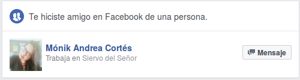
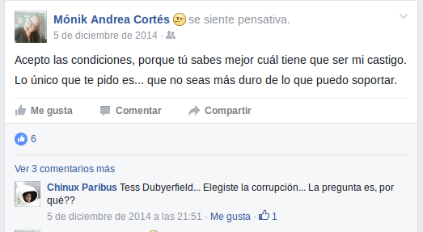
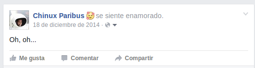
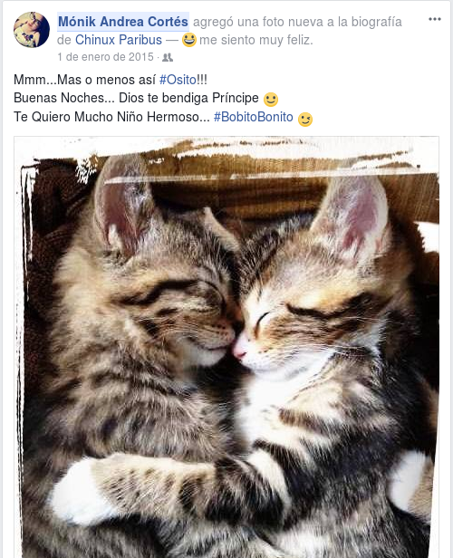
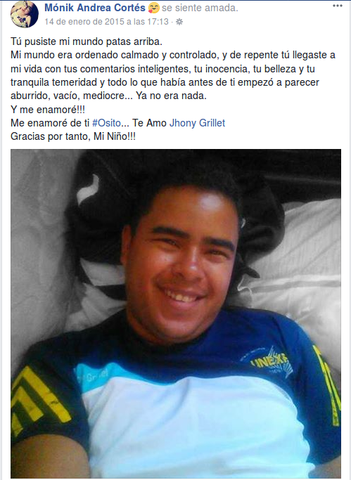
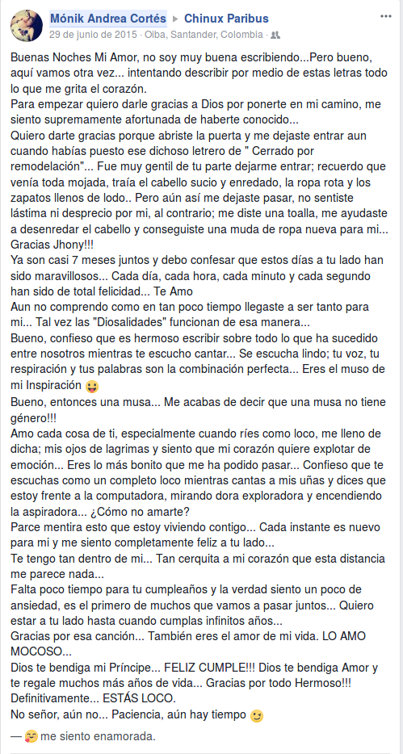
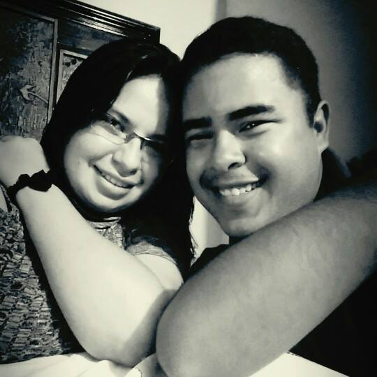
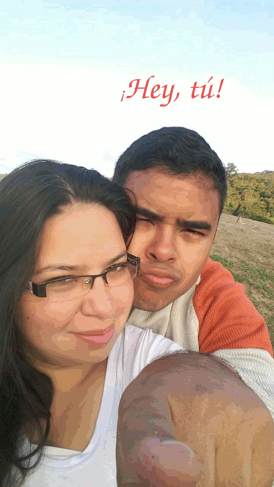
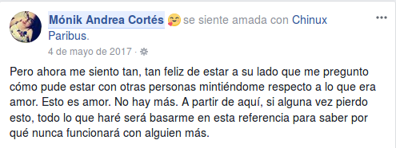
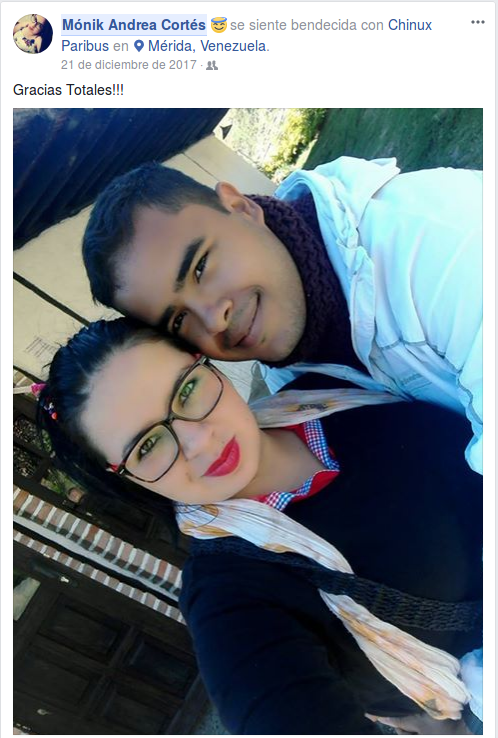

Sabes, siempre me dices que sueles olvidar las cosas importantes entre nosotros como las fechas y eso. Así que que mejor regalo que recordártelo de una forma bonita, donde quiera que estés...
1 de Agosto
¿Quién diría que lo nuestro empezaría con una solicitud de amistad en Facebook?

( no volvimos a escribirnos )
5 de Diciembre
Publicaste algo extraño, la gota que derramó el vaso, lo que me animó a hablarte...

¡Y me respondiste al privado! Una conversación que duró 3 ó 4 horas...
...que se repitió a la misma hora del día siguiente, y del día siguiente.
10 de Diciembre
Fue miércoles, marcaste mi número la primera vez y no atendí (¡no sabía quien era, lo juro!)
Marcaste la segunda vez, y aunque la llamada duró 20 minutos, fue tan hermoso escuchar tu voz por primera vez...
( otra vez silencio )
18 de Diciembre
Volvimos a hablar ese fin de semana, y cada detalle que me dabas, cada palabra, cada cosa que me contabas me hacia sentir parte de algo especial, como no me había sucedido antes...

( feliz navidad y feliz año nuevo. una promesa en aire )
1 de Enero
Promesa confirmada...

14 de Enero
Y vino el amor... Así, como quién libera el agua de una represa...

Cada noche a tu lado, cada llamada, cada detalle, nos fue acercando cada vez más entre nosotros y a Papá...
29 de Junio
No puedo creer todavía que hayas hecho eso...
Tu primer regalo de cumpleaños para mí...

Nada, tocó esperar y trabajar duro para el tan ansiado encuentro. Vacaciones, sueldos, ahorros, todo para poder vernos...
18 de Diciembre
El tan esperado encuentro...

Cada día que pasé a tu lado fue una experiencia maravillosa, mandando al carajo todos mis miedos y dudas sobre quién eres tú...
28 de Diciembre
Dicen que todo lo bueno dura poco, pero algo me decía que volvería, algo muy dentro de mí quería quedarse contigo y convertir tú tierra en mí tierra, pero no era posible en aquél entonces...
4 de Febrero
Un regalo de mí para ti... ¡Feliz cumpleaños mi amor!

Claro, hay muchas más fotos pero son nuestras, jejeje...
...ese año, tú y yo pasamos momentos muy duros, pero no nos rendimos, y no perdimos la esperanza de volver a vernos...
4 de Mayo
¿Cómo no seguirte amando, si a pesar de todos tus miedos, de tus dudas, de tus demonios, sigues dándome estos detalles?

21 de Diciembre
Me diste el regalo más maravilloso que pudo haberme dado alguien sin ser mi cumpleaños. ¡Viniste a visitarme!

Aunque duró poco tu visita, fue suficiente para hacerme saber con plena seguridad, que estaríamos juntos para toda la vida. Soy yo el que tiene que agradecerte...
4 de Febrero
Feliz cumpleaños, chiquita. Estos 3 (casi 4) años juntos han sido una aventura, llena de altibajos, llena de fe, de esperanza, pero sobre todo, llena de amor. Del amor que me ofreces gratuitamente, porque te nace, porque eres tan plena que no hay manera que pueda resistirme a tanto amor, y solo puedo hacer este pequeño anuario para los dos, para recordarnos que hemos sido felices a ratos, pero que lo seremos siempre, por lo que somos, por lo que creemos y lo que amamos.
❤ ¡Te amo, cosita! ❤